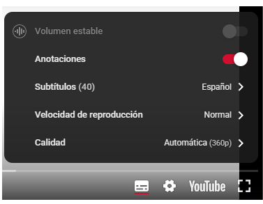
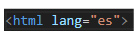
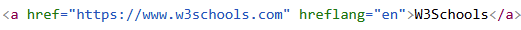

Tus compañeros de desarrollo web tienen dudas sobre cuál es la combinación de color más accesible entre las siguientes opciones:
¿Cómo les ayudamos a seleccionar la mejor opción?
Podemos usar la herramienta web de Contrast Checker para comprobar qué combinación de colores puede ser más accesible. Como se muestra en las siguientes imágenes la segunda opción es la más accesible para la web.


Los subtítulos ponen nuestro contenido a disposición de una audiencia mayor, en la que se incluyen personas con problemas auditivos, o bien personas que hablan un idioma distinto al del vídeo.
¿Cómo incluirías subtítulos en un vídeo? ¿Se puede hacer directamente desde YouTube?
Se incluirían subtítulos a los videos de manera que tuviera contraste con el video para facilitar la lectura a través de herramienta de edición de video.
En Youtube hay una opción que te permite incluir subtítulos a tus vídeos. Se pueden incluir subtítulos a través del engranaje en la barra del video de youtube.
¿Cómo podrías ver una web como la vería una persona que tuviera las imágenes y el código JavaScript deshabilitado?
En el navegador de Chrome puedes deshabilitar las imágenes y el código JavaScript pulsando el botón de los tres puntos. Después pulsando Configuración, Privacidad, Configuración del sitio web, deshabilitar imágenes y JavaScript.
En el navegador de firefox puedes deshabilitar las imágenes y el código JavaScript pulsando el botón de los tres puntos (igual que en Chrome). Después pulsando Ajustes, en el buscador de la parte superior escribe: configuración avanzada, busca javascript.enabled (para javascript) o permissions.default.image (para las imágenes) y deshabilitalo.
Se puede usar la herramienta web de “Textise” para mostrar cómo se vería solo con el texto.
El marcador de idioma beneficia a todos los usuarios:
¿Cómo indicarías el idioma de una web? ¿y el idioma de una palabra concreta, el de una etiqueta de cita o el de una etiqueta blockquote? ¿Qué harías para indicar el idioma de un enlace?
El idioma de la página se especifica en la etiqueta html “lang”. El idioma en cualquier parte del código se especifica mediante lang=”el idioma”.
Ejemplo:
El idioma en un enlace se especifica mediante hreflang=”es” (en español). Ejemplo para inglés:
¿Le pondrías un texto alternativo al logotipo de una empresa? ¿Qué texto alternativo? ¿y a una imagen decorativa?
Todas las imágenes en un página web deben tener dentro de la etiqueta img el atributo de alt. En el caso de una imagen decorativa, alt debe encontrarse vacía. En el caso del logotipo de la empresa, le pondremos el nombre de la empresa.
<img src="logo.jpg" alt="Logo Empresa">
<img src="decoracion.jpg" alt="">
Estos son los distintos niveles de conformidad sobre accesibilidad disponibles: ¿Qué nivel de conformidad exigirías para un sitio web muy complejo?
Se recomendaría llegar a un nivel AAA porque si tiene muchos elementos complejos como formularios y muchos botones, alguien con alguna discapacidad podría tener dificultades para moverse en la web. Aunque la dificultad sería muy elevada para llegar a ese nivel como mínimo debería tener un nivel AA.
¿Por qué crees que es importante separar los estilos (CSS) de los contenidos y la estructura del documento (HTML)?
Se crearían hojas de estilo específicas dependiendo de la discapacidad del usuario como modificar los colores de las fuentes y del fondo de las páginas. De esta forma, se adaptaría a sus necesidades en vez de usar unos estilos globales.
Por este motivo, es muy importante no incluir estilos en línea.
Se puede usar la extensión Helperbird para cambiar la fuente y el tamaño de las webs que se visualizan en el navegador.
Te han encargado que mejores la accesibilidad de un sitio web que tiene graves problemas de estructuración en su contenido.
Esta web no utiliza elementos semánticos ni tiene los encabezados anidados de forma correcta: h1, h2, h3.
En su lugar dispone de encabezados desestructurados: h1, h3, h5 e incluso encabezados creados con divs en lugar de usar el elemento semántico correspondiente.
¿Cómo podrías mejorar este diseño? ¿Qué herramienta utilizarías para comprobar el anidamiento de los encabezados?
En primer lugar, usaría elementos semánticos para marcar la estructura de la página web como párrafos, citas en línea, citas en bloque, cursiva y negrita para dar énfasis, etc.
En segundo lugar, añadiría los encabezados de forma correcta con las etiquetas de h1, h2, h3 hasta h6 en vez de manera desordenada.
En cualquiera de los casos, nunca utilizaría las hojas de estilo con otras etiquetas para simular encabezados sino que se utilizaría las etiquetas de encabezado.
Para comprobar el anidamiento de los encabezados se puede utilizar la extensión Web Developer Toolbar.
Te han encargado que mejores la accesibilidad de un sitio web que se encuentra maquetado mediante tablas.
¿Qué mejoras realizarías?
En primer lugar, no utilizaría tablas para maquetar la página web ni para representar los contenidos.
En el caso de utilizar una tabla en la web, usaría las etiquetas thead, tbody y tfoot.
Para la maquetación del sitio, utilizaría CSS Grid o Flexbox para organizar la estructura.
Además, emplearía etiquetas semánticas como header, nav, main o footer, junto con hojas de estilo, para mejorar la presentación de los elementos.
¿Qué alternativas hay al uso de un CAPTCHA? ¿Cómo es el nuevo reCAPTCHA v3 de Google y qué mejoras trae?
Los CAPTCHAS presentan muchos problemas de accesibilidad para ciertos grupos de usuarios.
Una alternativa para ello, es utilizar operaciones matemáticas simples o preguntas textuales.
Para solucionarlos, podemos usar reCAPTCHA v3 que ya no realiza pruebas interactivas a los usuarios.
¿Para qué usarías el atributo accesskey?
Se utilizan para definir un atajo de teclado.
<a href="https://w3.org" accesskey="1">Home page</a>
¿Para qué usarías el atributo tabindex? ¿Qué valor puedes darle a tabindex para eliminar un elemento del orden de pestañas?
Si queremos eliminar un elemento del orden de pestañas usamos tabindex="-1".
¿Cómo etiquetarías correctamente los controles del siguiente formulario?
<label>Nombre:</label> <input type="text" name="textfield" />
Definiendo los for en label e id en input.
<label for="name">Nombre:</label> <input id="name" type="text" name="textfield" />
Para hacer accesibles los inputs que no tienen etiqueta label asociada podemos usar aria-label.
<input type="text" name="buscar" aria-label="Escribe lo que quieres buscar">